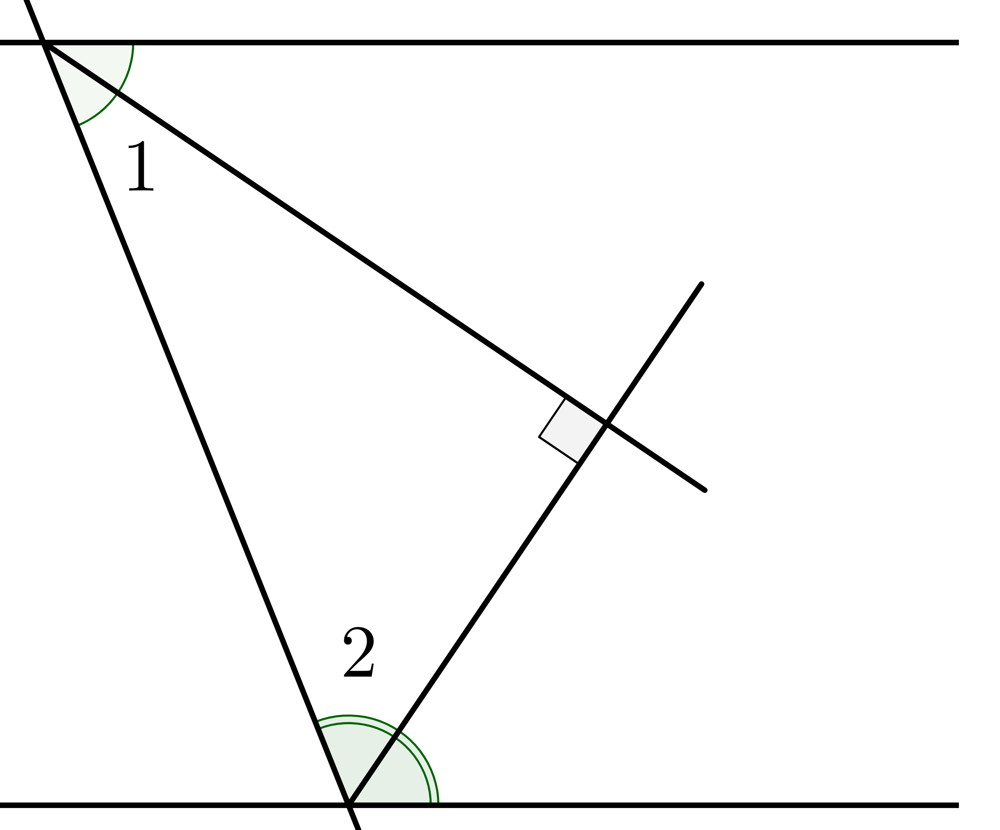

1. Смежные углыДва угла, у которых одна сторона общая, а две другие являются продолжениями одна другой, называются смежными. Сумма смежных углов равна 180°. ∠1 + ∠2 = 180° |
2. Биссектрисы смежных углов перпендикулярны.∠1 = ∠2; ∠2 + ∠3 = 90° |
3. Вертикальные углыДва угла называются вертикальными, если стороны одного угла являются продолжениями сторон другого. Вертикальные углы равны. ∠1 = ∠3 |
4. Соответственные, накрест лежащие и односторонние углыЕсли даны две параллельные прямые и их секущая, то углы 1 и 5, 2 и 6, 3 и 7, 4 и 8 называются соответственными, углы 3 и 6, 4 и 5 называются накрест лежащими, углы 3 и 5, 4 и 6 называются внутренними односторонними. Тогда: Соответственные углы равны: |
5. Биссектрисы односторонних внутренних углов перпендикулярны. |
6. Сумма внутренних углов произвольного n-угольникаСумма внутренних углов произвольного n-угольника равна 180° · (n-2). Например, если n = 6, то ∠A1 + ∠A2 + ∠A3 + ∠A4 + ∠A5 + ∠A6 = 180° · (6-2) = 720°. |
7. Внешний угол многоугольникаВнешним углом многоугольника будем называть угол, смежный внутреннему углу многоугольника. Их сумма равна: (180° - ∠A1) + ... + (180° - ∠An) = n·180° - 180°(n-2) = 360°. |